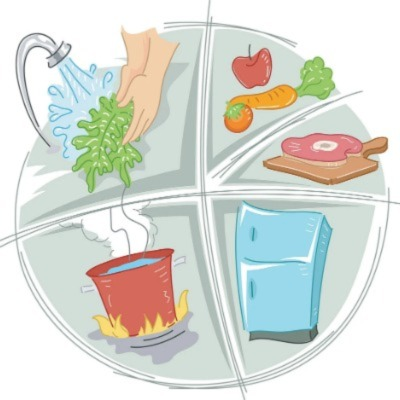
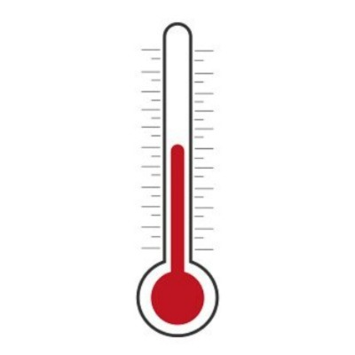
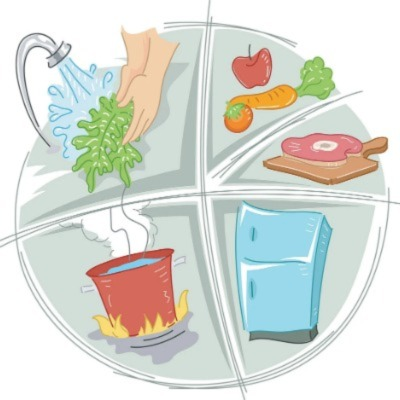
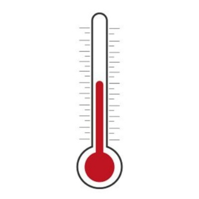

To Eat or Not to Eat
Food inspections are evaluations conducted at food establishments to manage the safety and quality of the environment and the food being served. These inspections are necessary to ensure public health safety and to prevent any food-borne illnesses. The Food Protection and Policy Program of Prince George's County Health Department provides many services that inspects and responds to any concerns regarding a food facility. The Food Inspection API collected from Prince George's County Open Data shares data on the types of inspections given across numerous establishments as well as its location, inspection results, and more.
Types of Regulations
 


